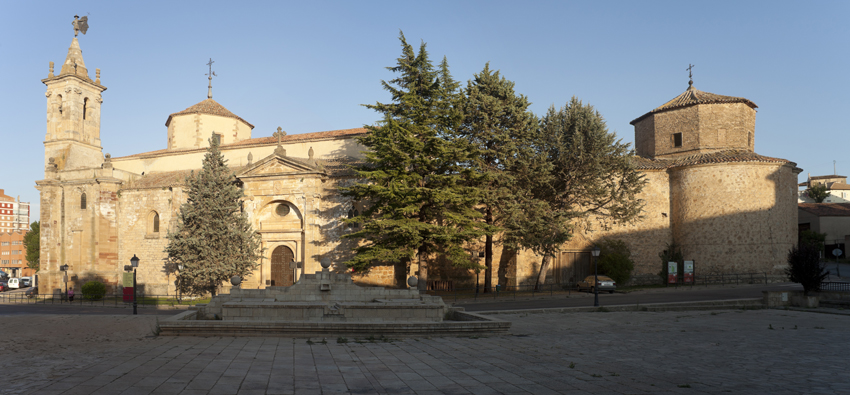

Molina de Aragón
Introducción
Lugares a destacar:
- Castillo de Molina de Aragón
- Monasterio de San Francisco
Molina de Aragón es una ciudad y municipio español de la provincia de Guadalajara perteneciente a la comunidad autónoma de Castilla-La Mancha.
Historia
Durante el periodo califal la zona, debió estar muy poco habitada, principalmente sus habitantes habrían sido bereberes arabizados según Menéndez Pidal. Posteriormente, con la desintegración del califato, se formó un pequeño reino de taifa, mencionado en el cantar épico del Mío Cid. Durante la Reconquista fue tomada por el rey aragonés Alfonso I el Batallador en 1128. El heredero de Alfonso I, su hermano Ramiro II, optó por ceder a Castilla las tierras correspondientes al señorío de Molina. La repoblación la hizo pues la Corona de Castilla, por estar situada al oeste del Sistema Ibérico; posteriormente la zona retornó a manos musulmanas, concretamente almorávides.Alrededor de 1139, las tierras fueron tomadas de nuevo por Manrique de Lara, y la zona se constituyó en Señorío independiente, a favor de éste,que otorgó fuero a la villa molinesa en 1142.Enrique II de Castilla donó a Molina a su lugarteniente Bertrand du Guesclin, aunque la plebe molinesa —en el contexto de la guerra entre Castilla y Aragón— se rebeló y se decidió poner bajo la soberanía de Aragón en el año 1366, culminando el proceso tres años más tarde con la aceptación por parte del rey aragonés. De esta pertenencia proviene el nombre actual de la ciudad, antes conocida como Molina de los Caballeros. Retornó finalmente a manos castellanas en 1375, al ser entregado el señorío en la dote matrimonial de Leonor —infanta de Aragón— en su matrimonio con el infante Juan de Castilla.
Durante la Guerra de Independencia, el comportamiento de resistencia de los habitantes a las tropas napoleónicas, motivó que éstas, en represalia, incendiaran la villa. En reconocimiento, las Cortes le concedieron el título de "Muy Noble y Muy Leal Ciudad".
Lugares Destacados
Castillo de Molina de Aragón

El castillo de Molina de Aragón, también llamada fortaleza de Molina de los Caballeros, es una fortaleza aragonesa situada en el municipio español de Molina de Aragón, en la provincia castellano-manchega de Guadalajara. Asentada en la falda del monte que se eleva por encima de la población y el valle del río Gallo. Se encuentra en estado de ruina consolidada, y es posible su visita previa solicitud. Fue declarado Monumento Nacional el 3 de junio de 1931. Bajo la protección de la Declaración genérica del Decreto de 22 de abril de 1949, y la Ley 16/1985 sobre el Patrimonio Histórico Español.
Monasterio de San Francisco
El monasterio de San Francisco de Molina de Aragón fue un monasterio franciscano situado en la ciudad española de Molina de Aragón. Fue fundado a finales del siglo XIII y en la actualidad el edificio es ocupado por una Residencia de la Tercera Edad, atendida por las Hermanas de la Caridad de Santa Ana, más otra pequeña parte que aloja el Museo Comarcal de Molina de Aragón.